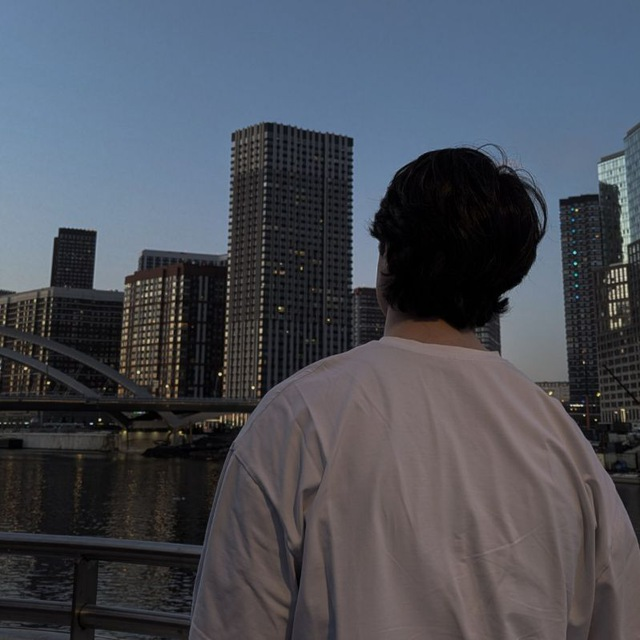

Интеллект и аналитика
Увлекаюсь глубокими рассуждениями, чтением литературы и решением судоку для развития структурного мышления. При наличии материалов быстро осваиваю новые предметные области.

Открыт к интересным проектам и предложениям
Ценю глубину мысли, интеллектуальную эстетику Old Money и культуру диалога. Быстро погружаюсь в новые сферы — от философии до сложной логистики — если задача по-настоящему увлекает.
Увлекаюсь глубокими рассуждениями, чтением литературы и решением судоку для развития структурного мышления. При наличии материалов быстро осваиваю новые предметные области.
Коммуникация — моя сильная сторона. Умею выстраивать диалог, находить общий язык с разными людьми и переводить спорные ситуации в конструктивное русло.
Придерживаюсь выдержанного стиля в тёмных, серых и коричневых тонах. Пишу стихи, слежу за культурой речи и увлекаюсь искусством нишевой парфюмерии.
Разрешение конфликтов мирным путём, поиск компромиссов и построение доверительных отношений в команде.
Быстрое погружение в незнакомые процессы, работа с информацией, логистикой и новыми проектами.
Грамотная устная и письменная речь, внимание к деталям, этикету и визуальному восприятию.